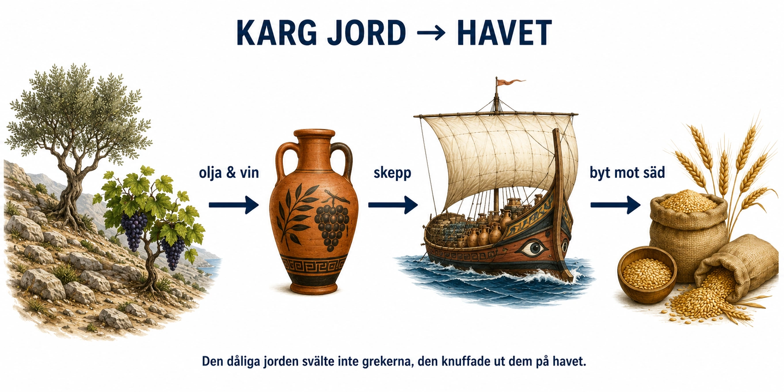

Standardtexten säger att Grekland hade ont om bra åkermark, och att grekerna därför blev sjöfarare och grundade kolonier. Men hur hänger det egentligen ihop? Varför skulle dålig jord göra ett folk till havets mästare i stället för att bara göra det fattigt? Svaret är en av de finaste orsakskedjorna i hela antiken, och den börjar med ett träd.

Problemet: jorden räcker inte. Mycket av Grekland är berg och sten. Att odla spannmål — vete och korn, det som mättar en växande befolkning — kräver stora, jämna, bördiga fält, och sådana fanns det för lite av. När grekerna blev fler räckte helt enkelt inte den grekiska jorden till för att alla skulle få bröd. I en flodkultur hade man löst det med bevattning och enorma sädesfält. Det kunde grekerna inte.
Lösningen: odla något annat, och byt till dig resten. Men den karga, steniga jorden och de soliga sluttningarna var däremot perfekta för två grödor som inte behövde djup, fet åkerjord: olivträdet och vinrankan. Grekerna satsade på just dem. Olivolja och vin var dessutom smart av ett annat skäl — de var värdefulla varor som gick att lagra länge och frakta långt utan att förstöras. En kruka olivolja var mycket mer värd än samma vikt korn. Så i stället för att försöka odla sitt eget bröd på jord som inte dög, odlade grekerna olja och vin, seglade i väg med dem, och bytte till sig spannmål från platser där det växte i överflöd — Egypten, Sicilien, kusterna kring Svarta havet.
Följden: ett folk på havet. Och här snurrar kedjan i gång. För att byta olja mot säd på andra sidan Medelhavet behövde man skepp, hamnar och sjövana. Man behövde också platser att handla på och skaffa mark — därför grundades kolonier runt hela Medelhavet. Den dåliga jorden svälte alltså inte ut grekerna; den knuffade ut dem på havet och gjorde dem till handelsmän, skeppsbyggare och kolonisatörer. Ett fattigt jordbruksland förvandlades till en rik handelskultur — inte trots den karga jorden, utan tack vare hur grekerna svarade på den.
En eftertanke om olivträdet. Grekerna själva förstod hur central oliven var: i myten gav gudinnan Athena olivträdet som gåva till staden Aten, och det räknades som stadens största skatt. Det finns en poäng gömd där. Ett olivträd växer långsamt och kan ta över tio år innan det ger frukt — men sedan lever det i hundratals år. Att plantera oliver är att satsa på framtiden och på att få stanna kvar i fred länge nog att skörda. Trädet blev därför en symbol för fred och tålamod, och än i dag är olivkvisten en fredssymbol.
Det viktiga att ta med sig är mönstret, inte detaljerna. Samma sak som vi såg i Forntiden händer igen: överskott och specialisering — att inte alla gör samma sak, utan att man producerar det ens plats är bäst på och byter till sig resten. Skillnaden är att där floden gav överskott genom slam och bevattning, gav Grekland det genom olja, vin och segel. Geografin ställde en fråga — hur försörjer man fler människor än jorden orkar mätta? — och grekerna svarade med havet.